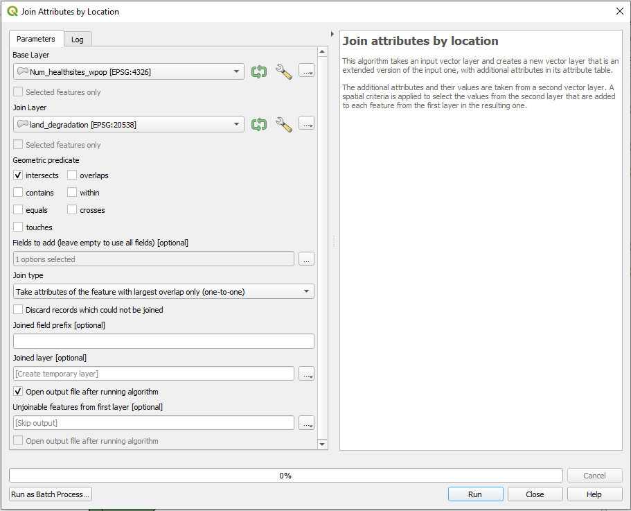
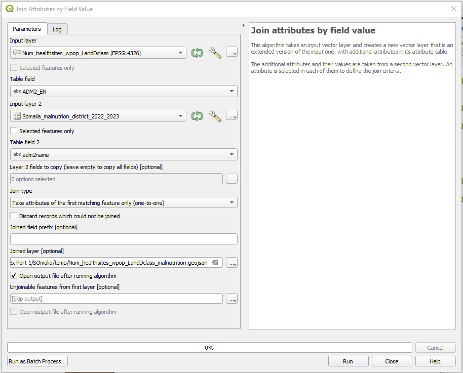
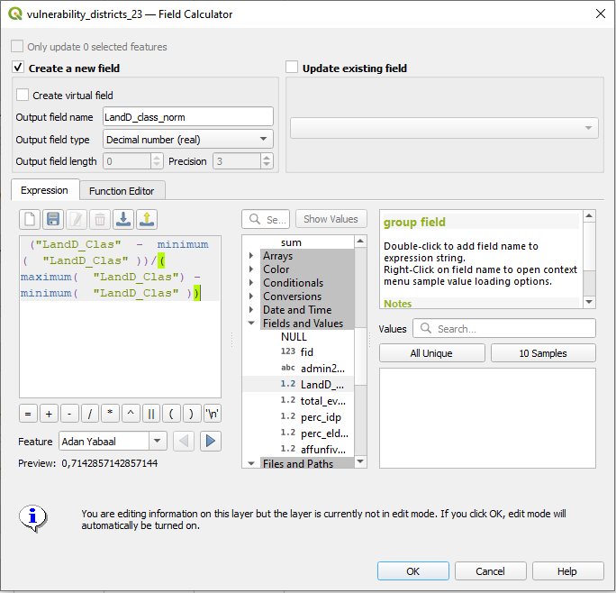
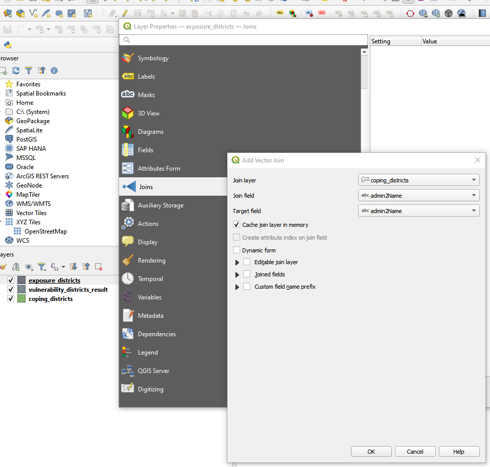

Evaluación de riesgos#
Características del ejercicio#
Objetivo del ejercicio:
En este ejercicio, recorrerá los diferentes pasos que requiere QGIS para realizar una evaluación espacial de riesgos.
Tipo de ejercicio de capacitación:
Este ejercicio puede utilizarse tanto en la capacitación en línea como en la presencial.
Puede realizarse como ejercicio guiado o individualmente a modo de autoestudio.
Estas habilidades son relevantes para:
Duración estimada del ejercicio:
Artículos relevantes en Wiki:
Antecedentes#
En el contexto de la metodología de financiación basada en previsiones, la realización de una evaluación de riesgos sólida es un paso crucial para el desarrollo de un protocolo de acción temprana. Un análisis de riesgos sirve para comprender qué tipos de impactos de desastres pueden esperarse de un tipo concreto de peligro y para identificar quiénes y qué están expuestos y son vulnerables a este peligro y por qué. Al superponer la información sobre la exposición, la vulnerabilidad y la capacidad de afrontamiento, quedará claro qué zonas se prevé que se verán más gravemente afectadas. Etas zonas pueden considerarse entonces como áreas prioritarias para adoptar medidas tempranas, con el fin de asegurar que las comunidades más expuestas al riesgo reciban asistencia antes de que se produzca el evento. La recopilación y el procesamiento de esta información varían en función del problema, pero el esquema de cálculo para combinar la información en una puntuación de riesgo sigue siendo el mismo.
Somalia está considerablemente expuesta a las sequías. Presentaremos una evaluación de riesgos para un protocolo de acción temprana contra la sequía.
Parte 1: Procesamiento de indicadores#
Tarea#
La primera parte del ejercicio consistirá en preparar los datos para que sirvan de valores indicadores. Los datos brutos se procesarán para obtener indicadores significativos y se calculará el índice de vulnerabilidad. Por último, todos los datos relevantes para el riesgo se unirán en una única capa vectorial mediante geoprocesamiento de datos espaciales.
Datos#
Descargue la carpeta de datos para “Modul_5_Exercise2_Drought_Monitoring_Trigger.zip” Aquí. En ella encontrará dos carpetas. Una para la primera parte (“Modul_5_Ex1_Part_1”) y otra para la segunda parte (“Modul_5_Ex1_Part_2”) del ejercicio.
Abra la carpeta de datos para la primera parte del ejercicio: “Modul_5_Ex1_Part_1”.
Guarde la carpeta en su computadora y descomprima el archivo. La carpeta comprimida incluye lo siguiente:
som_admbnda_adm2_ocha_20230308.shp: Límites de los distritos de Somalia (nivel administrativo 2)WHO_health_sites.shp: Centros de salud de Somaliasom_ppp_2020_UNadj_constrained.tif: Recuentos de población de Somalia en WorldPopSomalia_malnutrion_district_2022_2023.xlsx:Somalia: Malnutrición aguda
Hint
Todos los archivos conservan sus nombres originales. No obstante, no dude en modificar sus nombres si fuera necesario para identificarlos más fácilmente.
Cargue los límites de los distritos de Somalia (nivel administrativo 2) (
som_admbnda_adm2_ocha_20230308.shp) y los centros de salud de Somalia (`WHO_health_sites.shp) en QGIS.Asegúrese de que ambos conjuntos de datos estén en la misma proyección cartográfica. En este caso tenemos dos proyecciones cartográficas diferentes y reproyectaremos los centros de salud de Somalia en EPSG 4326. Utilice la herramienta
Reproject layerpara este proceso. Para obtener más información, consulte la entrada de Wiki sobre proyecciones cartográficas.
Attention
Antes de empezar a realizar cualquier operación SIG, explore siempre los datos. Compruebe que las proyecciones de las distintas capas sean iguales.
Para convertir la información de la capa de puntos de centros de salud en un valor indicador utilizable, ahora podemos contar los centros de salud por distrito. Podemos utilizar la herramienta Count points in polygon de la caja de herramientas de procesos. Eche un vistazo a la descripción de la herramienta y a las entidades adicionales que ofrece. Para nuestra tarea solo tenemos que especificar la capa de entrada de polígonos y puntos, el nombre del campo de recuento (por ejemplo, Num_healtsites) y elegir el nombre y el directorio de la capa de salida. Explore los datos de salida.

Contar centros de salud por distrito#
Ahora tenemos el número de centros de salud por distrito. No obstante, sería interesante saber cuántos centros de salud existen por cada 10 000 habitantes. Para esta tarea necesitamos saber en primer lugar cuántos habitantes tiene cada distrito. Podemos procesar esta información utilizando la herramienta Zonal statistics de la Caja de herramientas de procesos. Para obtener más información, consulte la entrada de Wiki sobre estadísticas zonales. Especifique su capa de entrada (salida del paso 3, por ejemplo, Num_healtsites) y su capa ráster (WorldPop Raster), especifique el prefijo de la columna (por ejemplo, _wpop) y seleccione las estadísticas a calcular (sum). Para cada distrito se sumarán todos los valores de píxel de WorldPop Raster que se encuentren dentro de él. Explore los datos de salida.

Resumiendo los recuentos de población por distrito.#
Hint
A lo largo del proceso de procesamiento de indicadores, se obtendrán varios resultados provisionales. Asegúrese de guardarlos en una carpeta “temp”.
Ahora conocemos el número de centros de salud y el número de habitantes por distrito. Estamos listos para calcular nuestro indicador final: Número de centros de salud por cada 10 000 habitantes.
Abra la tabla de atributos de “Num_healthsites_wpop” (salida del paso 4) y abra la
Field Calculatorhaciendo clic en el botón . Al marcar la casilla
. Al marcar la casilla Create a new fieldpodemos hacer cálculos y guardarlos inmediatamente en una nueva columna de atributos.Defina el nombre del campo de salida como “healthsites_10000” y configure
TypecomoDecimal Number(real).Ahora calcularemos en el campo de expresión el número de centros de salud por cada 10 000 habitantes:
("Num_healthsites"/"_wpopsum")*10000
Cuando haya terminado, haga clic en
 para guardar sus cambios y desactive el modo de edición haciendo clic de nuevo en
para guardar sus cambios y desactive el modo de edición haciendo clic de nuevo en  (video en Wiki).
(video en Wiki).

Calculando los centros de salud por cada 10 000 habitantes.#
Degradación de las tierras#
Un factor muy importante para las zonas vulnerables a la sequía es el nivel de degradación de la tierra. Es un factor importante no solo para la agricultura, sino también para la ganadería, ya que ambas son fuentes primarias de ingresos. Intentaremos añadir esta información a nuestro conjunto de datos:
-Degradación de las tierras en Somalia

Degradación de las tierras.#
Observará que solo podemos descargar la información como imagen. Este es un caso muy común cuando se trabaja con datos abiertos. Tenemos que digitalizar la información para su posterior procesamiento. Encuentre la versión digitalizada en “Modul_5_Ex1_Part_1\land_degradation_somalia”.
Explore los datos. Tenemos una columna “LandD_CLas” que indica la gravedad de la degradación de la tierra de 0 a 3. Ahora queremos unir cada clase de degradación de la tierra con su distrito correspondiente, calculando el área de mayor superposición.
Abra la herramienta
Join attributes by locationde la caja de herramientas de procesos.Defina
Input Layer(capa que desea enriquecer) yJoin Layer(conjunto de datos con la información adicional).Seleccione
intersectscomo predicado geométrico y añada solo laLandD_classcomo campo a añadir a nuestra capa base.Como
Join TypeconfigurarTake attributes of the feature with largest overlap only (one-to-one).Guardar como capa.
Consulte la entrada de Wiki Unión espacial para obtener más información.
{kind=link}

Uniendo atributos por ubicación.#
Malnutrición#
Otro indicador muy importante para describir la vulnerabilidad en un distrito es la desnutrición aguda, especialmente en el caso de infantes menores de 5 años.
Descargue los datos que necesitamos:
Somalia_malnutrion_district_2022_2023.xlsx:Somalia: Malnutrición aguda
Explore los datos. ¿En qué resolución están disponibles los datos? ¿Tiene alguna idea sobre cómo podemos añadirlos a nuestro conjunto de datos de indicadores?
Guarde el archivo de Excel como CSV haciendo clic en
Save file asy seleccioneCSV (delimiter-separated).Cargue el archivo CSV en su QGIS por medio de arrastrar y soltar.
Abra la herramienta
Join attributes by field valuede la caja de herramientas de procesos.Especifique los dos conjuntos de datos que deseamos unir, así como el campo común disponible para la unión (
ADM2_ENyadm2name).Como
join typeconfigurarTake attributes of the first matching feature only (one-to-one).Guarde la capa en un archivo.
{kind=link}

Uniendo atributos por valor de campo.#
En el archivo de registro aparecerá un mensaje: “6 feature(s) from input layer could not be matched”.
Attention
Es posible que, después de la importación, en el archivo CSV los encabezados de las columnas de la tabla de atributos no tengan los nombres correctos (en lugar de ello, puede que aparezca “field 1”, “field 2”, etc.). En este caso, los nombres correctos de los campos suelen encontrarse debajo del encabezado.

El archivo de registro para el algoritmo “Join Attribute by Field Value”.#
Abra las tablas de atributos tanto de la capa de salida como del archivo CSV para encontrar la raíz del problema. En la capa de salida, haga doble clic en affunderfive y lleve el valor NULL a la parte superior. Compruebe el atributo de unión “ADM2_EN” y compárelo con el atributo de unión “adm2name” del archivo CSV.
La ortografía de los nombres de los distritos difiere. Dado que estamos utilizando los límites de admin-2 como capa base para todos los indicadores, ahora podemos adaptar los nombres en el archivo CSV.
Puede editar los nombres en seis casos en la tabla de atributos del archivo CSV alternando el modo de edición, o puede editar manualmente el archivo CSV en Excel y luego cargarlo en QGIS.
Asegúrese de denominar la capa final “vulnerability_districts”.
Parte 2: Cálculo del riesgo#
Tarea#
En la segunda parte del ejercicio mostraremos los pasos para pasar de los indicadores a un análisis de riesgos.
Puede encontrar todos los datos para la segunda parte del ejercicio en el “Modul_5_Ex1_Part_2”. Descargue la carpeta de datos para la segunda parte del ejercicio: “Modul_5_Ex1_Part_2”. En la primera parte del ejercicio hemos procesado la capa de vulnerabilidad; las capas simplificadas de exposición y falta de capacidad de afrontamiento se han preparado con antelación para este ejercicio. Estas capas solo tienen de 3 a 4 indicadores por razones de complejidad. Véase a continuación un ejemplo de los indicadores que se utilizaron para Somalia:

Evaluación de riesgos de indicadores#
1. Normalización#
Para poder realizar más cálculos sobre los indicadores, tenemos que hacerlos comparables. Para ello, podemos normalizarlos de modo que estén dentro de un intervalo de 0-1.
\( Valor\ normalizado\ = \frac{value\ -\ min value}{max\ value \ - \ min } \)
Abra la tabla de atributos de “vulnerability_districts” y abra la
Field Calculatorhaciendo clic en el botón. Al marcar la casilla Create a new fieldpodemos hacer cálculos y guardarlos inmediatamente en una nueva columna de atributos.Comience con el primer indicador
LandD_class.Defina el nombre del campo de salida como “LandD_class_norm” y configure
TypecomoDecimal Number(real).Ahora calcularemos en el campo de expresión la normalización del indicador:
("LandD_Clas" - minimum( "LandD_Clas" ))/( maximum( "LandD_Clas") - minimum( "LandD_Clas" ))
Cuando haya terminado, haga clic en
para guardar sus cambios y desactive el modo de edición haciendo clic en (Video Wiki).
{kind=link}

Normalización de los indicadores.#
Repita este paso para los demás indicadores.
Ahora la columna original y la columna normalizada para cada indicador.
2. Direcciones#
La dirección indica si un indicador sigue o no la lógica predefinida: “cuanto más alto sea el valor, peores son las circunstancias”, lo que significa que los valores más altos implican un mayor riesgo. La lógica se adapta a las tres dimensiones, ya que, en general, es intuitivo pensar que valores altos = riesgo alto. Si un indicador respectivo sigue esta lógica, la dirección sería 1; si no lo hace, la dirección sería = -1.
Para entender las direcciones de nuestros indicadores, primero tenemos que asignarlos a una de las dimensiones (exposición, vulnerabilidad, capacidad de afrontamiento).
¿A qué dimensión asignaría los indicadores procesados y cuál sería su dirección?
El siguiente paso variará en función de la dirección:
Si la dirección es 1 (lo que indica un peso positivo), la fórmula es sencilla:
\( ponderado= valor \times peso \)
Si la dirección es -1 (indicando un peso negativo), la fórmula ajusta el valor restándolo de 1 antes de aplicar el peso:
\( ponderado= (1 - valor) \times peso \)
La segunda fórmula invierte el valor \((1 - valor)\) antes de aplicar la ponderación, lo que da lugar a un cálculo diferente para las variables con ponderaciones negativas.
No profundizaremos más sobre este tema en este módulo, pero puede encontrar más información aquí.
Hint
Se recomienda comprobar debidamente la lógica de cada indicador. A menudo, los indicadores de una determinada dimensión siguen la misma lógica, pero siempre hay excepciones. Una vez aplicadas las direcciones a los datos, podemos usar la expresión “falta de capacidad de afrontamiento” en lugar de “capacidad de afrontamiento”, ya que hemos forzado los indicadores respectivos en otra dirección siguiendo la lógica predefinida (a mayor valor = peores circunstancias).
3. Ponderación de los indicadores#
En el siguiente paso podemos ponderar los indicadores en función de su relevancia para nuestra evaluación de riesgos. Se recomienda realizar encuestas o talleres con el personal local para averiguar la importancia de los respectivos indicadores.
Hasta ahora hemos utilizado la siguiente escala de ponderación:
Ponderación |
Definición |
|---|---|
0 |
No importante |
0,25 |
Ligeramente importante |
0,5 |
Moderadamente importante |
0,75 |
Bastante importante |
1 |
Muy importante |
En la tabla de atributos de su capa podemos calcular los indicadores ponderados para cada indicador normalizado. Para ello tenemos que seguir los mismos pasos que antes: Abra
Field Calculatorhaciendo clic el botón, y cree un campo nuevo con el sufijo “_weighted” en el campo de expresión.
"LandD_clas_norm" * 0.75

Añadiendo campo nuevo a indicadores de peso.#
Ahora tenemos la versión normalizada y ponderada para cada indicador:

Tabla de atributos con indicadores “_norm” y “_weighted”.#
4. Puntuación de vulnerabilidad / Índice#
Ahora estamos listos para calcular la puntuación de vulnerabilidad de cada distrito:
Abra la tabla de atributos -> abra
Field Calculator y cree un campo nuevo con el nombre “vulnerability_score” y el tipo de campo “Decimal Number (real)”. En la ventana de expresión, sume todos los valores ponderados de los indicadores:
("LandD_clas_weigthed" + "perc_elderly_weighted" + "affunderfive_weighted") / 3
5. Preparar la evaluación de riesgos#
Para calcular el riesgo tenemos que reunir nuestras tres dimensiones: exposición, vulnerabilidad y capacidad de afrontamiento.
Haga clic con el botón derecho en una de las capas y seleccione
Properties-> Vaya a la pestañaJoins.Haga clic en el botón
+, añada una nueva unión y seleccione la capa que desea unir. Defina “admin2Name” comoJoin Field:
{kind=link}

Uniendo capas por campo de unión.#
Haga clic con el botón derecho en la capa ->
Export->Save feature asy guarde la capa como capa “risk” en su carpeta temporal.Ahora trabajaremos con la capa de “risk”: Borre todos los campos excepto las puntuaciones normalizadas: Abra la tabla de atributos de su capa de riesgo
Toggle editing mode -> Delete field y seleccione todos los campos del indicador. Al final, la capa debería tener este aspecto:
y seleccione todos los campos del indicador. Al final, la capa debería tener este aspecto:

Puntuación normalizada de la tabla de atributos de la capa de riesgo.#
6. Cálculo del riesgo#
Por último, el riesgo se calcula mediante la media geométrica de las dimensiones Exposición y Susceptibilidad, mientras que la Susceptibilidad se define mediante la media geométrica de la Vulnerabilidad y la Falta de capacidad de afrontamiento. Se elige la media geométrica porque ofrece la ventaja de recompensar una evolución equilibrada y una reducción igual de los déficits en todos los niveles del modelo:
\( susceptibilidad = \sqrt vulnerabilidad \times falta\ de\ capacidad\ de\ afrontamiento \)
\( riesgo= \sqrt exposición \times susceptibilidad \)
Abra la tabla de atributos ->
Field Calculator y cree un campo “Susceptibility” y escriba la fórmula. Haga lo mismo para crear un campo llamado “risk” y emplee la expresión adecuada.
sqrt("Susceptibility" * "exposure_norm")

Cálculo del riesgo#
Note
La media geométrica es un tipo específico de promedio que se calcula multiplicando todos los valores de un conjunto de datos y luego tomando la raíz n-ésima del producto, donde n es el número de valores. Para dos valores, la media geométrica es la raíz cuadrada de su producto. Para tres valores, es la raíz cúbica, y así sucesivamente.
6. Visualización de los resultados#
Haga clic con el botón derecho en la capa “risk” ->
Properties->Symbology.En la esquina inferior izquierda, haga clic en
Style->Load Style.En la nueva ventana, haga clic en los tres puntos
 . Vaya a la carpeta “Map Template” y seleccione el archivo “somalia_risk_assessment_style.qml”.
. Vaya a la carpeta “Map Template” y seleccione el archivo “somalia_risk_assessment_style.qml”.Haga clic en
Open. A continuación, haga clic enLoad Style.De nuevo en la ventana “Layer Properties”, haga clic en
ApplyyOK.
Diseño de impresión:
Abra una nueva composición de impresión haciendo clic en
Project->New Print Layout-> introduzca el nombre de su proyecto actual, por ejemplo, “2024_01”.Vaya a la carpeta
Ex_Part_2y arrastre y suelte el archivomaps_somalia_template_risk_assessment.qpten el diseño de impresión.Cambie la fecha a la actual haciendo clic en “Further map information” en el panel de elementos. Haga clic en la pestaña
Item Propertiesy desplácese hacia abajo. Aquí puede cambiar la fecha en el campoMain Properties.Si es necesario, ajuste la leyenda haciendo clic en la leyenda en la pestaña
Item Propertiesy desplácese hacia abajo hasta que vea el campoLegend items. Si no está visible, verifique si necesita abrir el menú desplegable. Asegúrese de queAuto updateno esté marcada.Elimine todos los elementos de la leyenda haciendo clic en el elemento y luego en el icono rojo con el signo menos que aparece debajo.

Posible resultado del mapa.#
7. Automatización del proceso#
HeiGIT ha desarrollado un complemento de evaluación de riesgos para QGIS con el fin de simplificar este proceso y ahorrar tiempo. Puede encontrar más información sobre la metodología de riesgos y el uso del complemento aquí.
Para probar el complemento y ver el resultado, utilice los datos de entrada proporcionados en la carpeta: “Modul_5_Ex1_Part_2\Input data\QGIS Plugin Risk Assessment\input”